The five words you need
Project Pro uses a handful of words everywhere. Once these are clear, every screen makes sense.
Two more words appear later: an automation is a rule that acts for you ("when an item is done, tell the manager"), and an approval is a sign-off somebody must give before an item can move on.
Log in and find the app
- Open the address your administrator gave you in Chrome, Edge or Safari, for example https://yourcompany.odoo.com.
- Type your email and password and press Log in. The first time, you may be asked to set a new password.
- You land on the Odoo home with a grid of app icons. Click Project Pro. If you do not see it, ask your administrator to give you Project rights (see section 12).
- The top bar of Project Pro has four menus: Work, Approvals, Notifications and, for managers, Configuration. Almost everything in this guide lives under Work.
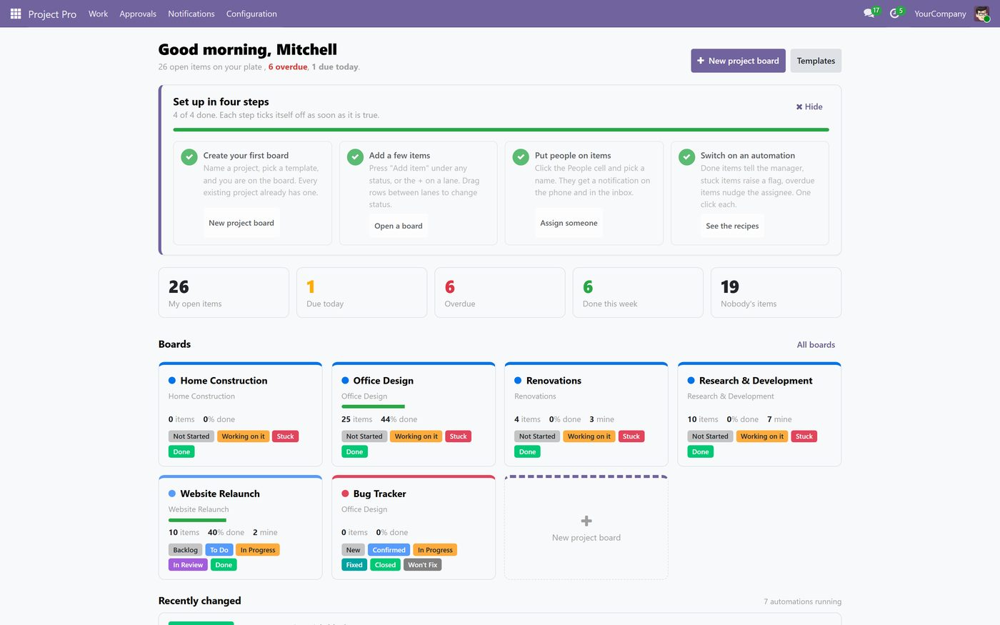
Home shows your own numbers: open items, due today, overdue, done this week. Click any tile to see the list behind it. Managers also see "Nobody's items", the work that has no owner yet.
Create your first board
- On Home, press New project board (top right). The same button sits on Work > Boards.
- Under What, leave Start a new project selected. (Choose Add a board to an existing project only if the project already exists in Odoo.)
- Project Name: type a name people will recognise, for example "Spring Campaign" or "Villa 12 Fit-out".
- Project Manager: the person responsible. Automations report to this person.
- Board Template: pick the one closest to your kind of work. The grey box underneath explains the template and lists its statuses in order. Leave it empty to start with the four starter statuses.
- Board Name: filled in for you; change it if you like.
- Keep Switch on the recommended automations ticked. It turns on three rules for this project only: people are told when they are put on an item, the manager is told when something is done, and a flag is raised when something is stuck.
- Press Create and open the board.
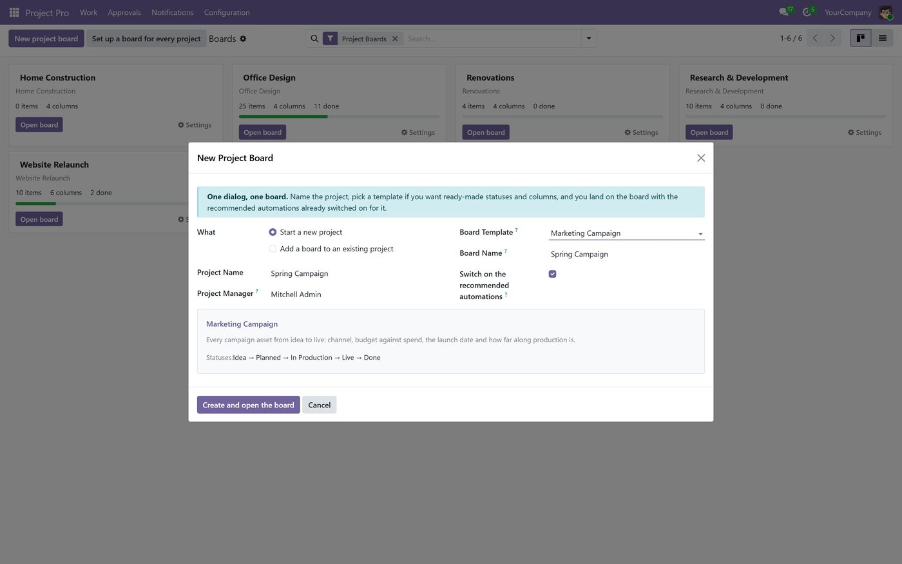
Every existing project already has a board with the starter columns. To create them all in one go, open Work > Boards and press Set up a board for every project. Nothing is duplicated if you press it twice.
Put work on the board
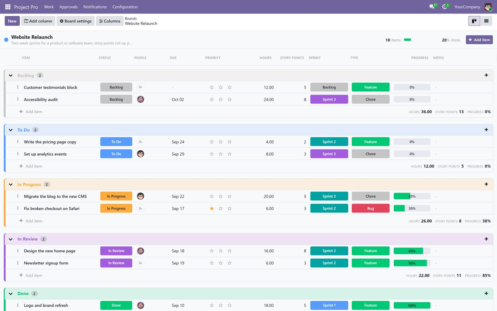
Add an item
- Press Add item at the top right of the board, or the + Add item line at the bottom of any lane, or the small + at the right end of a lane title. A new row opens with the cursor in the name.
- Type the name of the work, for example "Write the pricing page copy", and press Enter. Keep names short and specific; one item, one outcome.
- Add the next item straight away; the cursor stays ready.
Move an item to another status
- Drag the row by its name into another lane. The lane title turns the colour of the new status and the totals update.
- Or click the status pill in the row and pick a status from the coloured menu.
Open an item
- Click the expand icon next to the item name. A dialog shows every column of the item with a big status pill on top.
- Press Edit details to change everything on one compact form.
- Press Comments, files, subtasks to reach the full task: the conversation with your team, attachments and sub-items.
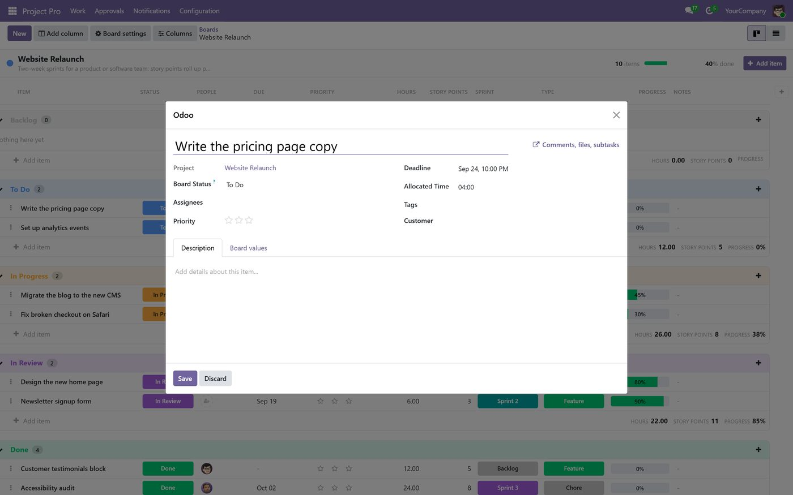
Change many items at once
Hover a row and tick the box on its left; tick a few. A bar appears with Status, Assign, Delete and Clear. Useful when a sprint ends or a colleague goes on leave.
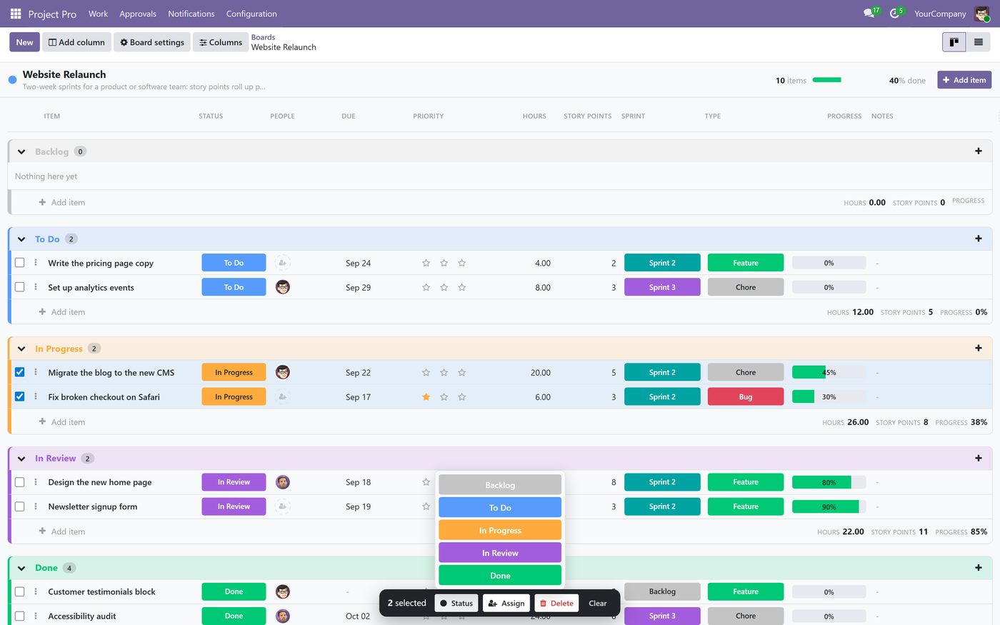
Fill in the columns
| Column | What it is for | How to edit |
|---|---|---|
| Status | Where the item stands. | Click the pill, pick from the coloured menu. Or drag the row to another lane. |
| People | Who does the work. More than one is fine. | Click the cell, type a name, pick it. Click the x on a face to remove someone. |
| Due | The deadline. | Click, pick a date. Overdue dates turn red on Home and in the lists. |
| Priority | Low, Medium, High or Urgent. | Click the stars. Urgent items break through quiet hours in notifications. |
| Timeline | Planned start and end. | Click, set the two dates in the small panel. |
| Progress | How far along, in percent. | Click, type a number, press Enter. |
| Notes | A short free text. | Click and type. |
| Tags | Labels of your own. | Click, type, pick or create. |
| Dropdown, Number, Checkbox, Date, Text | Columns you add yourself: sprint, budget, invoiced, channel, room number. | Same as above. Numbers add up at the bottom of each lane. |
Add a column of your own (managers)
- On the board, press Add column in the top left, or the + at the far right of the header row.
- Give it a name and a Type: Status, Dropdown, People, Date, Timeline, Number, Progress, Checkbox, Text or Priority.
- For Status and Dropdown, add the options under Options and pick a colour for each. For Number, choose whether the lane shows a total.
- Save. The column appears on every row of this board immediately.
Press Columns at the top of the board to hide columns you do not use or to change their order. A board with five columns is read faster than one with twelve.
Give work to people
- Click the People cell of an item and pick one or more names.
- The person receives a notification: in the Odoo inbox (the bell at the top), by email if they chose it, and on their phone if they installed the app (section 9).
- From then on they are told when the item changes status, is moved, is commented on, or when somebody mentions them with @name in a comment. They are never told about their own actions.
Choose how you want to be told
Open Notifications > My Settings.
- Event matrix: for each kind of event (assigned, status changed, moved, comment, mention, approval, deadline and so on) tick where you want it: inbox, email, phone push, or the daily digest.
- Digest: one summary a day or a week at the time you choose, instead of a message per event.
- Quiet hours: for example 20:00 to 08:00. Nothing arrives at night except Urgent items, if you leave "Urgent breaks quiet hours" on.
- Mute everything until: for holidays.
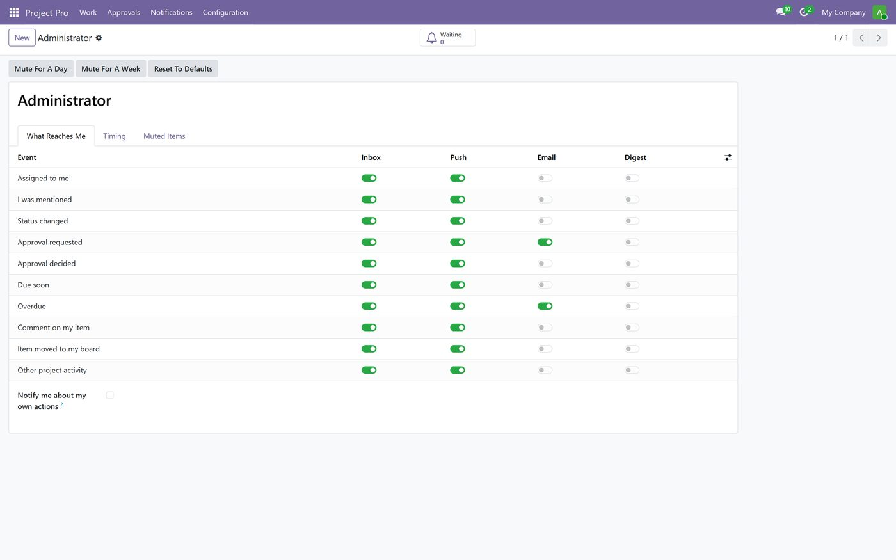
Notifications > My Notifications lists everything that was sent to you, with a link to the item.
Switch on automations
Open Work > Automations. Each card is a rule with a plain-English description, the projects it applies to, and three buttons:
- Switch on makes the rule live. Pause stops it without deleting it.
- Preview shows what the rule would do right now, on today's items, before you commit.
The recipes that ship with the app:
- Tell people when they are put on a card: the assignee gets a message with the item name.
- Done items tell the board manager: the project manager hears about every completion.
- Stuck items raise a flag: when an item goes to Stuck, the manager is told and the item is flagged.
- Overdue items nudge the assignees: every morning, people are reminded of items past their due date.
A new project created through New project board already has the first three switched on. To write your own rule, press New: choose what fires it (Item is created, Board status changes, Project stage changes, Assignee changes, Item moves to another board, A number crosses a threshold, A date arrives or passes, An approval is decided), narrow it down with a condition, and choose what it does (Notify someone, Set a column, Assign people, Move to a board or status, Create a subtask, Request an approval, Set a date from another date). Dry run shows what it would have done without doing it. Configuration > Automation Log records everything every rule did, with the item and the time.
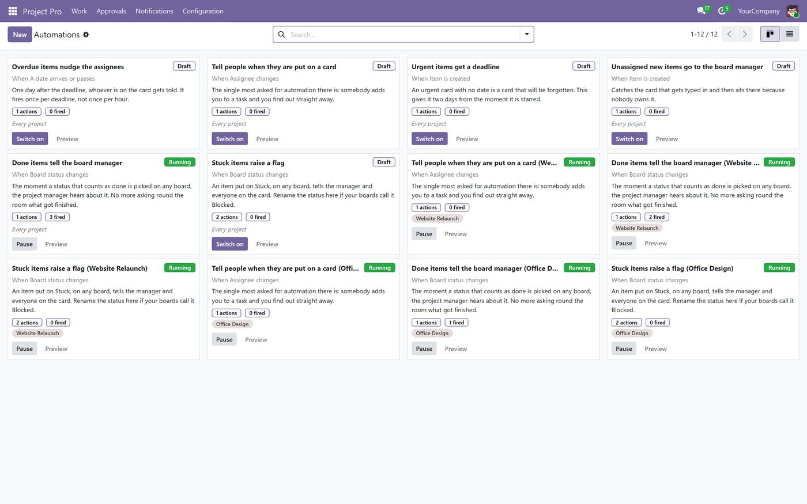
Approvals
Set up a rule (managers)
- Open Configuration > Approval Rules and press New.
- Name it, choose the Projects it applies to (or all), and the Guarded Stages: the stages an item may not enter without approval.
- Optionally watch a number or a checkbox: "Watched Number" above a limit, for example a cost above 5,000, or a "Watched Checkbox" such as "Client change".
- Add Levels. Each level names the approvers (people or a group). Level 2 is only asked after level 1 approved.
- Choose what happens meanwhile: Block the Task keeps it where it is; Send Back To returns it to an earlier stage if refused. Escalate After (hours) hands a request that nobody answered to Escalate To.
Approve or refuse
- Approvers are notified. They open Approvals > My Approvals, read the request, and press Approve or Reject with a note.
- Managers see every request under Approvals > All Approvals.
- Going on leave? Under Approvals > Delegations, name who Signs Instead while you are Away, with the dates.
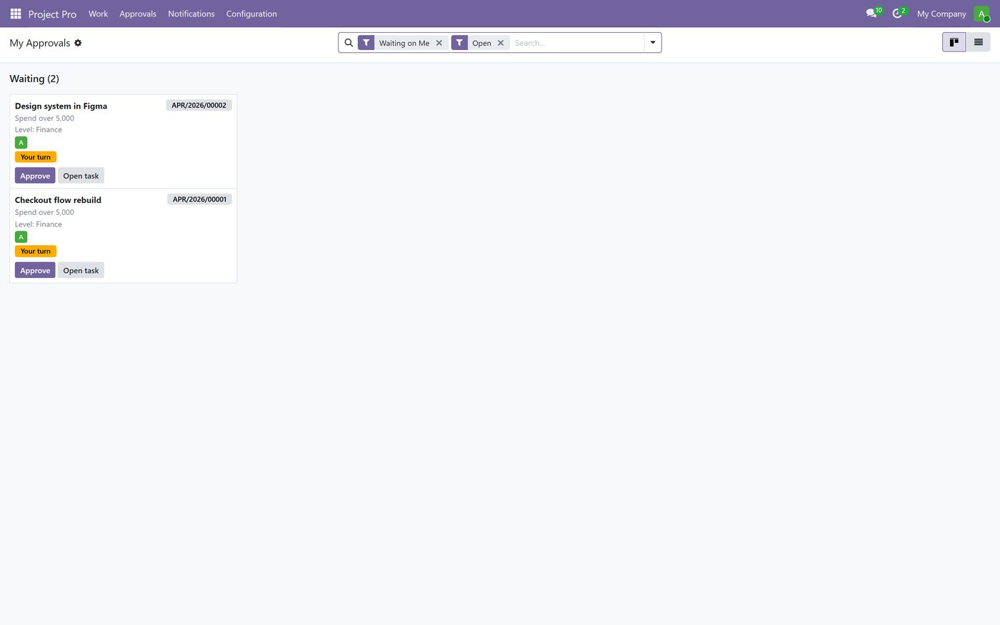
Keep an eye on everything
| Question | Screen | What you see |
|---|---|---|
| What do I have to do today? | Work > Home | Your numbers, your boards, the latest changes across every project. |
| Where is everything, across all projects? | Work > All Items | Every item grouped by project. Use the search box and filters (mine, overdue, unassigned). |
| What happens when? | Work > Timeline | Items as bars on a calendar, from planned start to due date. Drag the end of a bar to move a deadline. |
| Who is overloaded? | Work > Workload | Open items per person per week. A red cell is a person with more than they can finish. |
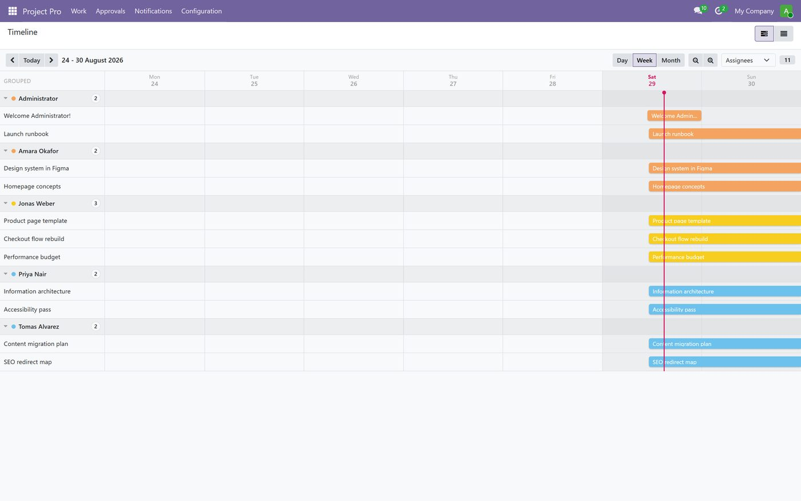
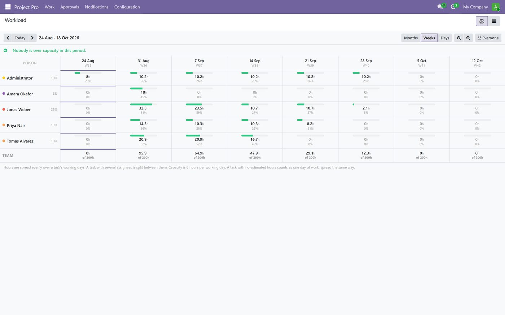
Every board also has a list view (the icon at the top right of the board) for sorting, exporting to Excel and printing.
On your phone
- Open the same address in Chrome (Android) or Safari (iPhone) and log in.
- Android: tap the three dots, then Install app or Add to Home screen. iPhone: tap the share icon, then Add to Home Screen.
- Open the app from the icon once, and allow notifications when asked. From now on, assignments, comments and approvals reach you as push messages.
On a phone, a board shows one card per item with the visible columns; tap a card to open the sheet, tap the status to change it, tap Edit details for the rest.
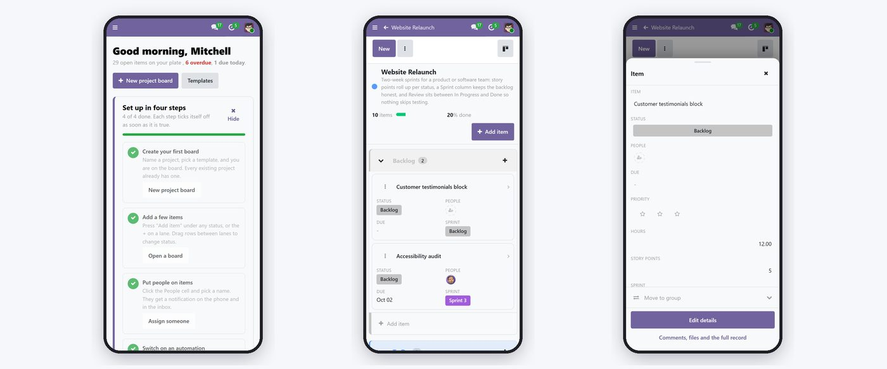
Templates
Work > Templates lists the templates that ship with the app: Sprint Board, Client Projects, Marketing Campaign, Construction Site, Recruitment Pipeline, Bug Tracker, Event Planning and Employee Onboarding. Each one brings its own statuses and columns. Press Use this template on a card, or pick it in the New Project Board dialog.
To make your own: get a board the way you want it, open Board settings at the top of the board, and press Save as Template. Columns, options and colours are copied; items are not.
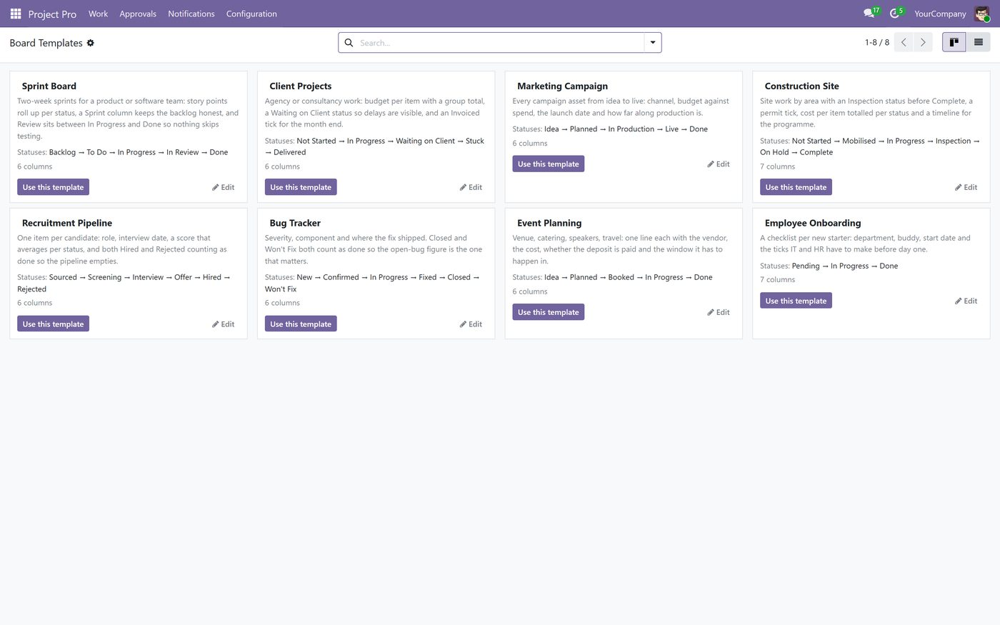
Giving clients access
Odoo has a customer portal built in, and Project Pro works with it. A client you invite logs in to a limited website page (My Account), not to the Odoo back office. There they see the projects you shared with them, the list of tasks with stage, deadline and assignee, and they can read and write comments on a task. They cannot see other clients, other projects, or anything you did not share.
Share a project with a client
- Make sure the client is a contact with an email address (Contacts app, or the Customer field of the project).
- Open the project (from Work > Boards, press the settings gear of the board, then the project link), open its Settings tab and set Visibility to All internal users and invited portal users.
- Press Share Project at the top of the project form (project managers see this button). Add the client's contact as a collaborator and choose Read (the client watches and comments) or Edit (the client can also change tasks; Edit with limited access keeps them to their own). Send. The client receives an email with a link and sets a password.
- From then on, the client opens the link, goes to My Account > Projects, and sees the shared project and its tasks. Every comment they write lands in the task conversation your team already uses, and your team's replies reach the client by email.
The portal shows Odoo's standard task view: name, stage, deadline, assignees and the conversation. It does not show the Project Pro board itself, its coloured statuses or your custom columns, and it does not show internal notes. If you want clients to see a live board with progress bars and statuses, with nothing internal visible, that is an add-on we can build on top of this app: a client board page with a per-project choice of which columns are public. Ask us for a quote.
For the administrator
- Users. Settings > Users & Companies > Users, press New, enter the name and email. Under Project choose User for team members and Administrator for managers who will create boards, columns, rules and templates. Save; the person receives an invitation email.
- Boards for existing projects. Work > Boards > Set up a board for every project.
- Company defaults for notifications. Configuration > Notification Settings: the event matrix, digest time and quiet hours every new user starts with. People can change their own afterwards.
- Approval rules and automations: sections 6 and 7. Preview before switching on.
- Email. Notifications by email and portal invitations need an outgoing mail server (Settings > Technical > Outgoing Mail Servers, or the hosting provider's default). Send yourself a test.
- Phone push. Push messages need the site on https and the Push add-on installed; your hosting partner will confirm this is in place.
- Housekeeping. Configuration > Automation Log and Configuration > Notification Queue show what the system did and what is still waiting to be sent. The log trims itself.
Daily routine
- Morning: open Home. Look at Due today and Overdue. Open each, and either do it, move its date, or hand it to someone.
- Check the bell. Approvals waiting for you, mentions, comments. Answer them from the notification.
- On the board: update statuses as you go. Drag rows. Set Progress on long items so the manager sees movement without asking.
- Stuck? Say so. Set the status to Stuck and write one line in Notes. The manager is told automatically.
- Evening: Done means done. Move finished items to Done. Tomorrow's digest and the manager's report count them.
- Managers, weekly: Workload and Nobody's items. Move work off the red cells; give every unowned item a name.
If something looks wrong
| What you see | Why | What to do |
|---|---|---|
| The Project Pro icon is missing after login. | Your user has no Project rights. | Ask the administrator to set Project to User or Administrator on your user. |
| A board is empty, or a project has no board. | The project was created outside Project Pro. | Managers: Work > Boards > Set up a board for every project. |
| I get no notifications. | Your matrix has the channel off, quiet hours are on, or the phone app was never installed. | Notifications > My Settings; on the phone, install the app and allow notifications. |
| I cannot add a column or a rule. | Those need the Administrator level of Project. | Ask a manager, or ask the administrator for the right. |
| An item will not move to a stage. | An approval rule guards that stage. | Open the item: the request and its approvers are shown. Ask the approver, or check Approvals > All Approvals. |
| "Refresh. The page appears to be out of date." | The app was updated while you were in it. | Refresh the page once. |
| The client says they cannot see the project. | Visibility is not set to portal users, or the share email was not sent. | Section 11, steps 2 and 3. Also check that the task itself is not marked private. |
Anything else: write to info@way4tech.com with the name of the board and a screenshot.